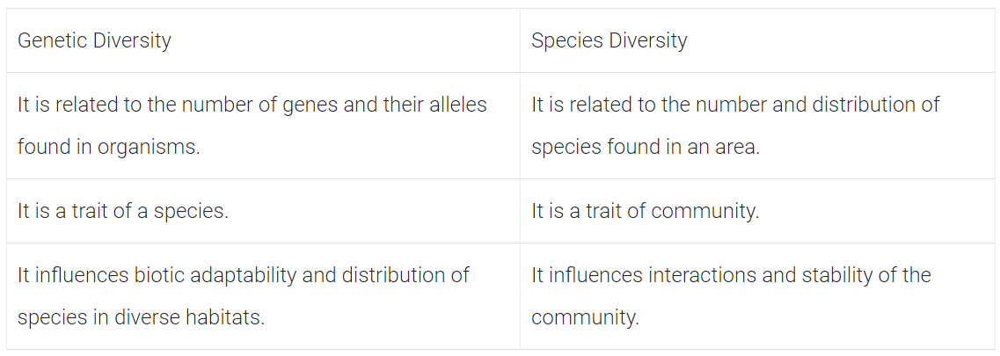

Chapter 1: Sexual Reproduction in Flowering Plants
Topic 1: Flower – A Fascinating Organ of Angiosperms
1 Mark Questions
Q1- Angiosperms bearing unisexual flowers are said to be either monoecious or dioecious. Explain with the help of one example each.
Solution- Plant bearing flowers of both sexes, i.e. staminate and pistillate flowers called monoecious, e.g. lea mays (maize). When both sexes, i.e. staminate and pistillate flowers, are present on different plants; these plants are called dioecious, e.g. Carica papaya (Papaya).
Q2- These pictures show the gynoecium of (A) Papaver and (B) Michelia flowers. Write the difference in the structure of their ovaries.
Solution- The gynoecium of Papaver is multicarpellary and syncarpous (pistils are fused together), the ovary can be unilocular to multilocular. The gynoecium of Michelia is multicarpellary and apocarpus (pistils are free) and the ovary is always unilocular.
Q3- Name the parts of the flower which the tassels of corn cob represent.
Solution- The parts of the flower that represent the tassels of corn cob are stigma and style which wave in the wind to trap pollen grains flowing with the wind.
2 Marks
Q3- Differentiate between the two cells enclosed in a mature male gametophyte of an angiosperm.
Solution- Haploid pollen grains represent the male gametophyte. It contains two cells, i.e. vegetative cell and generative cell. The vegetative or tube cell is larger in size as compared to generative cell and have a vacuolated cytoplasm. The generative cell on the other hand have thin dense cytoplasm with prominent nuclei that give rise to two male gametes, while vegetative cell does not.
3 Marks
Q1- A pollen grain in angiosperm at the time of dehiscence from an anther could be 2-celled or 3-celled. Explain, how are the cells placed within the pollen grain when shed at a 2-celled stage?
Solution- A pollen grain is partly germinated microspore representing the male gametophyte. It divides by unequal mitotic division and forms two cells. Thus, each mature pollen grain in angiosperms have a generative cell and a vegetative cell. In about 60% of angiosperms, pollen grains are shed at this 2-celled stage. However, in about 40% flowering plants, the generative cell may further divide mitotically to give rise to two male gametes and pollen grains are shed at this 3-celled stage.
Q2- In a flowering plant, a microspore mother cell produces four male gametophytes while a megaspore mother cell forms only one female gametophyte. Explain.
Solution- In flowering plants, microspore mother cells are found embedded in the spOrophytic tissue of anther. These cells undergo meiosis and give rise to four microspores that remain together in a microspore tetrad. After attaining maturity, these microspores separate from each other and each microspore develops into a male gametophyte or pollen grain. On the other hand, megaspore mother cell develops in the ovary of a flower and divides by meiotic division to produce four megaspores. From these, three degenerate while, the one undergoes further development and mitotic divisions to produce female gametophyte. Thus, in a flowering plant, a microspore mother cell produces four male gametophytes while, megaspore mother cell produces one female gametophyte.
Q3- In angiosperms, zygote is diploid, while primary endosperm cell is triploid. Explain.
Solution- In angiosperms or flowering plants, zygote is diploid and primary endosperm nucleus is triploid. It is because in these plants, one of the male gametes fuses with egg cell, which results in the formation of zygote. So, zygote is diploid. While primary endosperm cell is triploid because the nucleus of the second male gamete (n) fuses with the two haploid polar nuclei or diploid secondary nucleus (2n) of the central cell to form a triploid primary endosperm nucleus (3n). This process is referred to as triple fusion. The central cell is now called primary endosperm cell.
5 Marks
Q1- Describe the process of megasporogenesis up to fully developed embryo sac formation in an angiosperm.
Solution- In angiosperms, the process of megasporogenesis starts inside the nucellus of the ovule. During megasporogenesis, the Megaspore Mother Cell (MMC) undergoes meiosis resulting in the production of four megaspores. Out of the four megaspores, only one is functional while the other three degenerate. The functional megaspore undergoes mitosis to form two nuclei, which migrate to opposite poles, forming a 2-nucleate embryo sac. Further, mitotic divisions lead to the formation of 4-nucleate and 8-nucleate stages of the embryo sac. In these mitotic divisions, nuclear division is not followed by cell division. After the 8-nucleate stage, cell walls are laid down and a typical female gametophyte or embryo sac is formed. Among the 8 nuclei, 6 are enclosed by cell walls and organised into cells, while the remaining 2 nuclei (polar nuclei) are situated above the egg apparatus in a large central cell. Out of the six cells, three are grouped at the micropylar end and constitute the egg apparatus. It is made up of two synergids and one egg cell. The other three cells are located at the chalazal end and are called antipodals. Thus, a typical angiosperm embryo sac after maturity is 8-nucleate and 7-celled.
Q2- (i) Describe the sequence of the process of microsporogenesis in angiosperms.
(ii) Draw a labelled diagram of a 2-celled final structure formed.
Solution- (i) Development of pollen grain from Pollen Mother Cell (PMC) Pollen mother cell or microspore mother cell undergoes meiosis to form microspore tetrad or haploid microspores. As the anther matures, the microspores dissociate from the tetrad and develop into pollen grains. Nucleus of the microspores undergoes mitosis to form a large vegetative cell and small spindle-shaped generative cell. They develop a two-layered wall, the outer exine made of sporopollenin and the inner intine made of cellulose and pectin. Usually the pollen grains are liberated at this 2-celled stage. In certain species, the generative cell divides mitotically to form two male gametes and the pollen grains are 3-celled during liberation.
(ii) 
Q3- (i) Describe the formation of mature female gametophyte within an ovule in angiosperms.
(ii) Describe the structure of cell that guides the pollen tube to enter the embryo sac.
Solution- (i) The functional megaspore undergoes mitosis to form 2 nuclei, which migrate to opposite poles, forming a 2-nucleate embryo sac. Further, mitotic divisions lead to the formation of 4-nucleate and 8-nucleate stages of the embryo sac. In these mitotic divisions, nuclear division is not followed by cell wall formation. After the 8-nucleate stage, cell walls are laid down and a typical female gametophyte or embryo sac is formed. Among the eight nuclei, six are enclosed by cell wall and organised into cells, while the remaining two nuclei (polar nuclei) are situated above the egg apparatus in a large central cell. Out of the six cells, three are grouped at the micropylar end and constitute the egg apparatus made up of two synergids and one egg cell. The other three cells are located at the chalazal end and are called antipodals. Thus, a typical angiosperm embryo sac after maturity is 8-nucleate and 7-celled.
(ii) The egg apparatus present towards the micropylar end, comprises of two synergids and an egg cell. These synergids possess special cellular thickenings at their micropylar tip and called filiform apparatus. This filiform apparatus guides the pollen tube to enter into embryo sac.
Topic 2: Pre-fertilisation : Structures and Events
1 Mark
Q1- Give an example of a plant which came into India as a contaminant and is a cause of pollen allergy.
Solution- Parthenium or Carrot grass is a major contaminant which came to India and caused pollen allergy.
Q2- Write one advantage and one disadvantage of cleistogamy to flowering plants.
Solution- The advantage of cleistogamy is that it ensures pollination in the absence of pollinators. Disadvantage of cleistogamy is that there is no chance of variation to occur.
2 Marks
Q1- A bilobed, dithecous anther has 100 microspore mother cells per microsporangium. How many male gametophytes this anther can produce?
Solution- An anther is a four-sided (tetragonal) structure consisting of four microsporangia.
Each microsporangium has 100 microsporemother cells,
so total number of microsporemother cells in anther = 4 × 100 = 400 microspore mother cells.
Meiosis in each microspore mother cell produces 4 male gametes, so 400 cells will produce = 4 × 400 = 1600 male gametes.
Q2- In the TS of a mature anther given below, identify ‘a’ and ‘b’ and mention their functions.
Solution- In the given figure, a is sporogenous tissue and b is tapetum.
Sporogenous tissue has cell which are potential Pollen Mother Cell (PMC) or microspore mother cell and give rise to microspore tetrad after meiotic cell division.
Tapetum nourishes the developing microspores or pollen grains.
Q3- What is pollen-pistil interaction and how is it mediated?
Solution- Pollen-pistil interaction is a chain or group of • events that take place from the falling of pollen over the stigma to the formation of pollen tube and its entry into the ovule. It is mediated by chemical components of pollen grain, interacting with that of pistil.
Q4- Differentiate between xenogamy and geitonogamy.
Solution- Xenogamy is the transfer of pollen grains from anther of one flower to the stigma of another flower of a different plant, while geitonogamy is the transfer of pollen grains from anther of one flower to the stigma of another flower on same plant.
Q5- Express the process of pollination in Vallisneria.
Solution- Vallisneria is a water pollinated plant. In this plant, the process of pollination involves reaching of female flower at the surface of water by the long stalk and release of pollen grains onto the surface of water. These pollen grains are carried water currents to reach the stigma eventually.
Q6- A single pea plant in your kitchen garden produces pods with viable seeds, but the individual papaya plant does not. Explain
Solution- A single pea plant produces pods with viable seeds because the pea plant is autogamous, i.e they have the ability of self-pollination. Whereas the individual papaya plant is prevented from both autogamy and geitonogamy. In this plant, male and female flowers are present on different plants, i.e. each plant is either male or female.
Q7- Emasculation and bagging are the two important steps carried during artificial hybridisation to obtain superior varieties of desired plants. Explain giving reasons, in which types of flowers and at what stages are the two processes carried out.
Solution-
| Geitonogamy | Xenogamy |
|---|---|
| It is the transfer of pollen grains from the anther to the stigma of another flower of same plant. | The pollen grains are genetically similar to the plant. |
| It is the transfer of pollen grains from the anther to the stigma of different plants. | The pollen grains are genetically different from the plant. |
3 Marks Questions
Q1- Pollen banks are playing a very important role in promoting plant breeding programme the world over. How are pollens preserved in the pollen banks? Explain. How are such banks benefitting our farmers? Write any two ways.
Solution-Pollen grains are stored for years in liquid nitrogen (-196°C) in pollen banks for later use in plant breeding programmes. Plant breeding is a technique of manipulation of plant species in order to create desired plant types that are better suited for cultivation, give better yield and are disease resistant. The objectives of such pollen banks include incorporation of certain traits or characters into crop plants in order to enhance the food production such as:
(i) Increased tolerance to environmental stresses such as salinity, extreme temperature, drought, etc.
(ii) Resistance to pathogens like viruses, fungi and bacteria.
Q2- (i) Name the organic material exine of the pollen grain is made up of. How is this material advantageous to pollen grain?
(ii) Still it is observed that it does not form a continuous layer around the pollen grain. Give reason.
(iii) How are ‘pollen banks’ useful?
Solution- (i) The organic material of exine of pollen grain is sporopollenin. This is most resistant biological material known so far. It protects pollen grains from damages.
(ii) Exine on pbllen grain is not a continuous layer. It is thin at places and pollen tube germinates by growth of intine through these thin parts of exine called germ pores.
(iii) Pollen banks are used to store pollen grains for short as well as long period of time in viable conditions.
Q3- What is cleistogamy? Write one advantage and one disadvantage of it, to the plant.
Solution- Cleistogamy is a type of self-pollination that occurs in a permanently closed flower. Advantage and disadvantage of cleistogamy are as follows:
Advantage Cleistogamous flowers produce assured seed-set even in the absence of pollinators.
Disadvantage Cleistogamous flowers are invariably autogamous. So, there is no chance of cross-pollination. Hence, less variations are generated in the progeny.
Q4- You are conducting artificial hybridisation on papaya and potato. Which one of them would require the step of emasculation and why ? However for both you will use the process of bagging. Justify giving one reason.
Solution- Papaya produces unisexual flowers and potato produces bisexual flowers. Therefore, the step of emasculation will be done on potato because emasculation is done on bisexual flower to avoid self-pollination. But, bagging is done on unisexual flowers, so to dust suitable pollen grains op the stigma when the stigma turns receptive and the flowers are rebagged.
Q5- List the different types of pollination depending upon the source of pollen grain.
Solution- Depending on the source of pollen grain, pollination can be classified into:
Autogamy It is the transfer of pollen grain from anther to the stigma of the same flower.
Geitonogamy It is the transfer of pollen grains from anther of one flower to the stigma of another flower on the same plant. Geitonogamy is functionally cross-pollination involving pollinating agent, but genetically it is equivalent to autogamy since the pollen grains come from the same plant.
Xenogamy It is the transfer of pollen grains from anther to the stigma of different plants of same species. It brings genetically different types of pollen grains to the stigma.
Q6-
(i) Can a plant flowering in Mumbai be pollinated by pollen grains of the same species growing in New Delhi? Provide explanation to your answer,
(ii) Draw the diagram of a pistil where pollination has successfully occurred. Label the parts involved in reaching the male gametes to its desired destination.
Solution-
(i) Yes, a plant flowering in Mumbai can be pollinated by pollen grains of the same species growing in New Delhi. It is mainly because there are certain agents of pollination that can carry pollen grains to long distance. Plants can use either abiotic or biotic agents for pollination. Abiotic pollinators include wind and water while biotic pollinators are insects, birds,
(ii) The parts involved in transferring the male gametes to its desired destination are stigma, style, micropyle, filiform apparatus and synergids. Longitudinal Section (LS) of a post-pollinated pistil is given below
Q7- What does an interaction between pollen grains and its compatible stigma result in after pollination? List two steps in sequence that follow after the process.
Solution- When the pollen grains fall on the stigma, the pollen tube enters one of the synergids and releases two male gametes.
-One of the male gametes moves towards the egg cell and fuses with it to complete syngamy to form the zygote.
-The other male gamete fuses with the two polar nuclei and forms triploid Primary Endosperm Nucleus (PEN). This is termed as triple fusion.
-Since, two kinds of fusion syngamy and triple fusion takes place, the process is known as double fertilisation and is characteristics of flowering plants.
5 Marks Questions
Q1- As a senior biology student you have been asked to demonstrate to the students of secondary level in your school, the procedure(s) that shall ensure cross-pollination in a hermaphrodite flower. List the different steps that you would suggest and provide reasons for each one of them.
Solution- Cross-pollination is done to mix two desired characters of two different species of a plant. For example, purple and white flower of a pea.
- Select two pea plants one with white and other with purple flower.
- Label them as male (white flowered) and female (purple flowered) plant.
- Cut anthers from purple flower with the help of scissors before their dehiscence to avoid self-pollination and cover it with white paper bag.
- Now collect pollens from the white flower (male plant) with the help of brush.
- Dust the pollens on the stigma of female (purple fewer) flower.
- Cover it again with paper bag till seed formation.
Q2- Flowering plants have developed many devices to discourage self-pollination and to encourage cross-pollination. Explain three such devices.
Solution- Hermaphrodites or bisexual flowers develop outbreeding devices to ensure cross-pollination and avoid self-pollination. The three outbreeding devices that flowering plants have developed to discourage self-pollination are
(i) Unisexuality (Dicliny) Flowers are unisexual, so that self-pollination is not possible. The plants may be monoecious (bearing both male and female flowers, e.g. maize) or dioecious (bearing male and female flowers on different plants, e.g. mulberry, papaya).
(ii) Dichogamy Anthers and stigmas mature at different times in a bisexual flower for preventing self-pollination.
(a) Protandry Anthers mature earlier than stigma of the same flower. The pollens thus btfcome available to stigmas of the older flowers, e.g. sunflower, Salvia.
(b) Protogyny Stigmas mature earlier, so that they get pollinated before the anthers of the same flower develop pollen grains, e.g. Mirabilis jalapa, Gloriosa, Plantago.
(iii) The third device to prevent self-pollination is self-incompatibility. It is a genetic mechanism that prevents self-pollen from fertilising the ovules by preventing pollen germination or pollen tube growth in the pistil. All these methods encourage cross-pollination thus causing genetic variations among them.
Topic 3:Double Fertilisation
2 Marks Questions
Q2- Why is fertilisation in an angiosperm referred to as double fertilisation? Mention the ploidy of the cells involved.
Solution- In fertilisation (in angiosperm), two types of fusion occur, i.e. syngamy and triple fusion, in the embryo sac. That is why it is called double fertilisation. Ploidy of cells involved in double fertilisation: Zygote is diploid (2n). It is formed as a result of syngamy, i.e. fusion of two haploid gametes (male gamete + egg). Primary endosperm nucleus (3M) is formed as a result of triple fusion, i.,e. fusion of two haploid polar nuclei with male gamete.
5 Marks Questions
Q1- Explain the phenomenon of double fertilisation.
Solution- The phenomenon of double fertilisation occurs in following steps
- In an angiospermic plant, two male gametes are discharged by a pollen tube into the cytoplasm of a synergid of the embryo sac.
- One of the male gametes fuses with the egg to form a zygote. This process is called syngamy.
- Other male gamete fuses with the secondary nucleus to form the primary endosperm nucleus, this process is called triple fusion.
Since, there are two fusions (syngamy and triple fusion) inside an ovule during fertilisation, it is known as double fertilisation.
Topic 4: Post-fertilisation: Structures and Events
Topic 5: Apomixis and Polyembryony
Chapter 2: Human Reproduction
Topic 1: Male and female reproductive system
1 Mark Questions
Q1- Why are human testes located outside the abdominal cavity? Name the pouch in which they are present.
Solution: Human testes are located outside the abdominal cavity as it helps in maintaining low temperature (2-2.5%) lower than body temperature) required for spermatogenesis. Testes are enclosed in a pouch called scrotum.
Q2- Write the function of the seminal vesicle.
Solution: Seminal vesicle produces an alkaline secretion containing prostaglandins, proteins and fructose. The high fructose content provides energy to the spermatozoa. These secretions form 60-70% of the fluid found in the semen.
2 Marks Questions
Q1- Why are human testes located outside the abdominal cavity? Name the pouch in which they are present.
Solution: Human testes are located outside the abdominal cavity as it helps in maintaining low temperature (2-2.5%) lower than body temperature) required for spermatogenesis. Testes are enclosed in a pouch called scrotum.
3 Marks Questions
Q1- Name and explain the role of inner and middle walls of human uterus.
Solution- The innermost wall of uterus is called endometrium.
Role of Endometrium
(i) It lines the uterine cavity and is glandular in nature.
(ii) It undergoes cyclic changes during menstrual cycle.
The middle wall or layer of uterus is called myometrium.
Role of Myometrium
(i) It is made up of thick layer of smooth muscles.
(ii) It shows strong contractions during the delivery of baby.
Topic 2: Microscopic anatomy of testis and ovary
Topic 3: Gametogenesis- spermatogenesis and oogenesis
2 Marks Questions
Q1- Draw a labelled diagrammatic sectional view of a human seminiferous tubule.
Solution- 
3 Marks Questions
Q1-
(i) How many primary follicles are left in each ovary in a human female at puberty?
(ii) Draw a sectional view of the ovary showing the different follicular stages of a human female in her preovulatory phase of menstrual cycle.
Solution-
(i)A large number of primary follicles degenerate in females during the period from birth to puberty by the process called follicular atresia. As a result, about 60000-80000 primary follicles are left in each ovary at puberty.
(ii) 
Q2- Schematically represent and explain the events of spermatogenesis in humans.
Solution- 
5 Marks Questions
Q1- (i) Explain the process of spermatogenesis in humans.
(ii) Draw a human sperm and label acrosome and middle piece. Mention their functions.
Solution- (i) Spermatogenesis is the production of sperms in males.
In testis, the immature male germ cells (spermatogonia) produce sperms by spermatogenesis. It begins at puberty due to significant increase in the secretion of gonadotropins, i.e. luteinising hormone and follicle stimulating hormone under the influence of Gonadotropin Releasing Hormone (GnRH) released from hypothalamus. Spermatogonia (sing, spermatogonium) present on the inside wall of seminiferous tubules multiply by mitotic division and increases in numbers. Each spermatogonium is diploid and contains 46 chromosomes. Some of the spermatogonia transform to primary spermatocytes. The primary spermatocyte undergoes meiosis -1 and forms two haploid secondary spermatocytes containing 23 chromosomes each. The secondary spermatocytes undergo meiosis – II and form four equal sized haploid spermatids. Spermatids transform into the spermatozoa by spermiogenesis. After spermiogenesis, the sperm heads get embedded in the Sertoli cells and released from the seminiferous tubules via spermiation process.
(ii)
Q2-
(i) How is ‘oogenesis’ markedly different from ‘spermatogenesis’ with respect to the growth till puberty in the humans?
(ii) Draw a sectional view of human ovary and label the different follicular stages, ovum and corpus luteum.
Solution- (i) Oogenesis is markedly different from spermatogenesis in the following aspects:
| Spermatogenesis | Oogenesis | |
|---|---|---|
| It occurs in males. starting from puberty till the complete life cycle. | A single spermatogonium after second meiotic division forms four haploid sperrftatids that mature to form four spermatozoa. | The process of spermatogenesis, i.e. second meiotic division completes in testes and releases mature sperms. |
| It starts before birth during embryonic development and occurs till menopause. | A single oogonium, after second meiotic division, produces one ovum and two non-functional polar bodies. | The second meiotic division of oogenesis completes in Fallopian tube when sperm enters the secondary oocyte. |
Topic 4: Menstrual cycle
3 Marks Questions
Q1- Explain the events in a normal woman during her menstrual cycle on the following days
(i) Ovarian event from 13-15 days.
(ii) Ovarian hormones level from 16-23 days.
(iii) Uterine events from 24-29 days.
Solution-
(i) In the ovarian event from 13-15 days, a immature ovum (egg cell) is released from the Graafian follicle. Both LH and FSH attain maximum peak. FSH helps Graafian follicle to attain maturity and LH helps in its rupture. Ovum covered by a number of layer and a yellow fat layer forms corpus luteum. It releases (secretes) progesterone.
(ii) During menstrual cycle, the period level from 16-23 days is called luteal phase (secretory phase). The corpus luteum secretes large amount of progesterone which is essential for the maintenance of endometrium.
(iii) Uterine events from 24-29 days are under the influence of progesterone hormone. It influences the maintenance of the endometrium for any pregnancy to occur. In the absence of pregnancy, the corpus luteum degenerates and endometrium sheds off. It causes the menstrual flow or bleeding.
Q2- Explain the events in a normal woman during her menstrual cycle on the following days
(i) Pituitary hormone levels from 12 days.
(ii) Uterine events from 13-15 days.
(iii) Ovarian events from 16-23 days.
Solution-
(i) The period of 8-12 days after the onset of menstruation is the follicular phase. During this phase, GnRH from hypothalamus stimulates anterior pituitary to release FSH and LH. FSH stimulates the ovarian follicles to secrete oestrogen, which in turn stimulates the proliferation of the endometrium of the uterine wall. This causes the endometrial lining to thicken.
(ii) The uterine events between day 13 and 15 are governed by the high LH and FSH levels. The endometrium is intact due to the effect of these gonadotropin hormones and also prepares itself for pregnancy, if fertilisation occurs.
(iii) During 16-23 days, ruptured Graafian follicle gets converted into corpus luteum in the pvary. It starts secreting progesterone which maintains the endometrium, necessary for the implantation of fertilised ovum followed by other events of pregnancy.
Q3- Explain the development of a secondary oocyte (ovum) in a human female from the embryonic stage up to its ovulation. Name the hormones involved in this process.
Solution- Influence of Gonadotropins on Oogenesis:
- Gonadotropins, i.e., LH and FSH stimulate follicular development and secretion of oestrogen by the growing follicles.
- Both LH and FSH attain a peak level in the middle of the cycle (14th day).
- Rapid release of LH during mid-cycle causes ovulation.
- LH also stimulates the formation of corpus luteum from the ruptured follicle and secretion of progesterone from corpus luteum.
5 Marks Questions
Q1- Explain the steps in the formation of an ovum from oogonium in humans.
Solution- In human females, primary oocytes are formed from the oogonia during the embryonic developmental stages in the foetal ovaries.
- Oogonial cells start dividing and enter prophase-I of meiosis. They remain suspended at this stage as primary oocytes.
- Each primary oocyte is surrounded by a layer of granulosa cells and becomes the primary follicle.
- The primary follicle when surrounded by more layers of granulosa ceils, is called a secondary follicle.
- Secondary follicle transforms into a tertiary follicle, with the development of a fluid-filled cavity (antrum) around the primary oocyte.
- Granulosa cells become organised into an outer theca externa and an inner theca interna.
- Now, primary oocyte completes meiosis-I and forms a larger haploid secondary oocyte and a tiny first polar body.
- Tertiary follicle grows and becomes a mature follicle called Graafian follicle.
- Secondary oocyte secretes a new membrane called zona pellucida around it.
- At this stage, follicle ruptures to release the secondary oocyte, which moves into the cytoplasm.
- Secondary oocyte completes meiosis-II only when a sperm enters its cytoplasm. It forms a larger cell, the ootid and a small pell, the second polar body. This event occurs in the ampulla of Fallopian tube.
Q2-
(i) Explain menstrual cycle in human females.
(ii) How can the scientific understanding of the menstrual cycle of human females help as a contraceptive measure ?
Solution- (i) Menstrual Cycle The inner lining of uterus called endometrium, grows and thickens each month and prepares itself for the implantation of an embryo. If tht) pregnancy does not occur, the endometriumisheds off. The monthly development and shedding of the functional layer of the uterus is called the menstrual phase and the monthly maturation of an egg and its release is called the ovarian cycle. A typical menstrual cycle completes in an average of about. 28 days. It starts at the age of 13 or 15 and continues till about 50 years of age. Menstrual cycle occurs in three major phases namely menstrual phase, follicular phase and secretory phase.
(a) Menstrual Phase It lasts for 3-4 days. It occurs due to the breakdown of endometrium lining cf uterus and blood vessels.
(b) Follicular Phase or Proliferative Phase. It is regulated by the hormones secreted by anterior pituitary gland whose secretions stimulate the ovarian follicle to secrete oestrogens.
During the second week, most of the developing follicles die and one follicle continues to grow and gets mature to form Graafian follicle.
(c) Secretory Phase or Luteal phase The phase of menstrual cycle with possibility of fertilisation is the initial luteal phase. It is marked by the presence of corpus luteum (yellow body). During pregnancy, this yellow body secretes progesterone. In the absence of pregnancy, it regresses to form corpus albicans and menstruation starts (menstrual phase). Due to the hormones secreted by corpus luteum, i.e. oestrogen and progesterone, the release of FSH and LH is inhibited. This prevents the development of new follicles. This phase lasts for 14 days.
Maintenance of endometrium by progesterone is necessary for the implantation of embryo and pregnancy. During pregnancy, menstrual cycle stops due to high level of progesterone.
(ii) The scientific understanding of the menstrual cycle of human females helps as a contraceptive method. This method is known as periodic abstinence. In this method, the couples avoid or abstain the coitus from day 10 to 17 of the menstrual cycle when ovulation could be expected. The chances of fertilisation are very high during this period.
Q3-
(i) Explain the menstrual phase in a human female. State the level of ovarian and pituitary hormones during this phase.
(ii) Why is follicular phase in the menstrual cycle also referred as proliferative phase? Explain.
(iii) Explain the events that occur in a Graafian follicle at the time of ovulation and thereafter.
(iv) Draw a Graafian follicle and label antrum and secondary oocyte.
Solution-
(i) The reproductive cycle in female primates, e.g. monkeys, apes and human beings is called menstrual cycle. Menstrual phase starts from 3rd day and ends on 5th day of the menstrual cycle. It is initiated due to the reduced secretion of progesterone and oestrogen from the regressing corpus luteum in the ovary. The endometrium breaks down and blood along with degenerated ovum constitutes the menstrual flow. The secretion of pituitary hormones, i.e. FSH and LH is also reduced during this phase.
(ii) In follicular phase, primary follicles in the ovary grow under the influence of Follicle Stimulating Hormone (FSH). It starts from 6th day and ends on 13 th or 14th day of 28 day cycle. FSH also stimulates the ovarian follicles to secrete oestrogen which in turn stimulates endometrium to proliferate, so that it becomes thicker and highly vascularised. Thus, it is also called proliferative stage of menstrual cycle.
(iii) Graafian Follicle at Ovulation:
At the time of ovulation following events occur
- LH and FSH reach at their peak levels (about 14th-16th day of cycle).
- High level of LH induces Graafian follicle to rupture and the release of secondary oocyte from it.
- After ovulation, the remaining cells of Graafian follicle are stimulated by LH to develop corpus luteum (an endocrine gland which secrete progesterone hormone).
(iv) Diagrammatic sectional view of Graafian follicle:

Q4- Describe the roles of pituitary and ovarian hormones during the menstrual cycle in a human female.
Solution- The cycle of events starting from one menstruation till next in female primates is called menstrual cycle. It comprises of four phases which are regulated by both pituitary (LH and FSH) and ovarian (oestrogen and progesterone) hormones that affect ovaries and uterus, respectively. The events occurring in a menstrual cycle are as follows
| Menstrual phase (from 3rd-5th day in a 28 day cycle) | Initiated by reduced secretion of LH, progesterone and oestrogen. The endometrium breaks down and blood along with unfertilised ovum constitutes menstrual flow. |
|---|---|
| Follicular phase (from 6th-13th day in a 28 day cycle) | The FSH (Follicle Stimulating Hormone) secreted by anterior pituitary stimulates ovarian follicle to secrete oestrogens. These oestrogens stimulate proliferation of uterine walls as a result of which endometrium gets thickened (due to rapid cell division and increase in uterine glands and blood vessels). |
| Ovulatory phase (14th day in 28 day cycle) | Pituitary hormones, i.e. LH and FSH reach the highest level in middle of the cycle. Rapid secretion of LH causes ovulation thus, inducing the rupture of Graafian follicle to release secondary oocyte and a polar body. |
| Luteal or secretory phase (from 15th-28th day in a 28 day cycle) | The pituitary hormone LH stimulates the remaining cells of ovarian follicles to develop into corpus luteum. This corpus luteum secretes large amount of progesterone and maintains endometrium thickening for the implantation of fertilised ovum during pregnancy. In the absence of fertilisation, the hormone levels are reduced (LH and progesterone) and endometrium disintegrates leading to onset of another menstrual cycle. |
Chapter 11: Organisms and Populations
Topic 1: Organism and their Population
1 Mark Questions
Q1- Why are mango trees unable to grow in temperate climate? (65/1 2013) (65/3 2013)
Solution- Mango trees are unable to grow in temperate climate because low temperature affects the kinetics of enzyme’s functioning and through this basal metabolism, activity and other physiological functions of the organism get affected.
Q2- Give an example of an organism that enters ‘diapause’ and why? (65/2 2015) (65/3 2015)
Solution- Many zooplanktons in lakes and ponds enter diapause so, as to escape unfavourable environmental conditions and to delay their overall development.
Q3- Mention how do bears escape from stressful time in winter? (65/1 2016) (65/2 2016)
Solution- Bears escape from stressful time in winter by going into hibernation.
Q4- Write the basis on which an organism occupies a space in its community/natural surroundings. (65/2 2018) (65/3 2018)
Solution- An organism occupies individual or species level in its community. This level is occupied on the basis of ecological level of organisation or ecological hierarchy.
Individual → Population → Biotic community → Biome
Q5- How do animals like fishes and snails avoid summer related unfavourable conditions? (65/1 2020) (65/3 2020)
Solution- Fishes migrate and snails undergo into aestivation or summer sleep to avoid summer related problems.
Q6- How do seed bearing plants tide over dry and hot weather conditions? (65/1 2023) (65/2 2023)
Solution- During unfavourable conditions, seed-bearing plants reduce their metabolic activities and undergo a state of dormancy. The seeds germinate under favourable moisture and temperate conditions.
2 Marks Questions
Q1- Why the plants that inhabit a desert are not found in a mangrove? Give reasons. (65/2 2013) (65/3 2013)
Solution- Desert plants are not found in a mangrove because in xerophytic (desert) condition, plant roots grow deeply to explore any possibility of underground water, lehves are highly reduced (spines) to minimise transpiration. While mangroves grow in marshy areas. Their roots grow vertically upwards from the soil for the absorption of oxygen from the atmosphere as the soil is poorly aerated. These roots are called pneumatophores.
Q2- Shark is eurythermal, while polar bear is stenothermal. What is the advantage the former has and what is the constraint the later has? (65/1 2016) (65/3 2016)
Solution- The organisms that can tolerate and thrive in wide range of temperature are called eurythermal and those restricted to narrow range of temperatures are called stenothermal.
The levels of thermal tolerance of different species determine to a large extent their geographical distribution. Hence, eurythermal organisms (e.g. sharks) have vast geographical distribution as compared to stenothermal organisms (e.g. polar bears) that are limited to certain areas only.
Q3- How does our body adapt to low oxygen availability at high altitudes? (65/1 2019) (65/2 2019)
Solution- When we go for a trip to any high altitude places, we are advised to take it easy and rest for first two days because we may suffer from high altitude sickness. At low atmospheric pressure of high altitudes, body does not get enough oxygen, hence symptoms like nausea, fatigue start appearing. So, the body requires time to acclimatise to these conditions.
Some body adaptations at high altitudes are increase in the production of red blood cells to compensate low oxygen and faster breathing rate.
Q4- Hummingbirds live among the bushes in tropics, while penguins live on icebergs. They cannot survive if their habitats are reversed. Justify. (65/3 2021) (65/2 2021)
Solution- When we go for a trip to any high altitude places, we are advised to take it easy and rest for first two days because we may suffer from high altitude sickness. At low atmospheric pressure of high altitudes, body does not get enough oxygen, hence symptoms like nausea, fatigue start appearing. So, the body requires time to acclimatise to these conditions.
Some body adaptations at high altitudes are increase in the production of red blood cells to compensate low oxygen and faster breathing rate.
Q5- State Gause’s ‘competitive exclusion’ principle. How have the recent studies modified this principle? (65/1 2022) (65/2 2022)
Solution- Gause’s competitive exclusion principle states that two closely related species competing for the same resources cannot coexist indefinitely and the competitively inferior one will be eliminated eventually (true if resources are limiting). This principle
has been modified to ‘complete competitors cannot coexist’ one of the primary ways niche-sharing species can coexist is the competition-colonisation trade-off. In simple terms, species that are better competitors will be specialists, whereas species that are better
colonisers are more likely to be generalists.
3 Marks Questions
Q1- During a school trip to ‘Rohtang Pass’, one of your classmate suddenly developed ‘altitude sickness’. But, he/she recovered after some time.
(i) Mention one symptom to diagnose the sickness.
(ii) What caused the sickness?
(iii) How could she/he recover by her/himself after some time? (65/1 2014) (65/3 2014)
Solution- (i) The primary symptoms of ‘altitude sickness’ are headache, nausea, fatigue, etc.
(ii) Sickness was caused due to the low atmospheric pressure prevailing at high altitude. Due to this, the body gets deprived of sufficient oxygen.
(iii) Ascending slowly is the best way to avoid altitude sickness. This way the body compensates low oxygen availability by increasing red blood cells production, decreasing the binding capacity of haemoglobin and by increasing breathing rate. Thus, she/he recovers by herself after some time.
Q2- In certain seasons we sweat profusely, while in some other season we shiver. Explain. (65/3 2015) (65/2 2015)
Solution- In certain seasons, we sweat profusely while in some other season we shiver to maintain homeostasis. Homeostasis ensures constant body temperature and constant osmotic concentration of the body. It is maintained by following means. Human body maintains constant body temperature (37°C) by following way.
In summers, the outside temperature is very high than our body temperature. Due to this, profuse sweating occurs. This causes evaporation and cooling effect on the body.
In winters, the outside temperature is much lower than our body temperature. This causes shivering, a kind of exercise that produces heat and raises the body temperature.
Q3- Explain with the help of suitable examples the three different ways by which organisms overcome their stressful conditions lasting for short duration. (65/1 2017) (65/2 2017)
Solution- Organisms either migrate or suspend their metabolic activities, when conditions are stressful for short duration. However, in the absence of migration, following mechanisms help an organism to overcome adverse conditions:-
(i) Metabolic activities are reduced to undergo a state of dormancy, e.g. higher plants.
(ii) Hibernates (frogs) or aestivates (snails) or undergo diapause (zooplanktons).
(iii) Thick-walled spores are formed in stressful conditions and germinate under suitable conditions, e.g. bacteria, fungi and lower groups of plants.
Q4- In certain seasons we sweat profusely, while in some other season we shiver. Explain. (65/3 2020) (65/2 2022)
Solution- Ways to adapt to unfavourable conditions are:-
(i) Snails undergo aestivation (summer sleep) to avoid summer related problems.
(ii) Bears undergo hibernation during winter.
(iii) Zooplanktons enter a stage of suspended development called diapause.
(iv) Bacteria and fungi slow down their metabolic rate and form a thick-walled spores to overcome stressful conditions. These spores germinate after the onset of suitable environment.
(v) Seeds undergo a state of dormancy during unfavourable conditions and germinate under favourable conditions.
Q5- Water is very essential for life. Write any three features both for plants and animals, which enable them to survive in water scarce environment. (65/1 2023) (65/2 2023)
Solution- Three features in plants and animals that enable them to survive in water scarce environment are as follows:-
# Adaptations in Plants:
(i) Thick cuticle on their leaf surface.
(ii) Stomata are arranged in deep pits (sunken) to minimise water loss through transpiration.
(iii) Leaves are reduced to spines. The photosynthetic function is carry out by thick, fleshy, flattened stems.
# Adaptations in Animals:
(i) Kangaroo rat meets the water requirement through internal oxidation of fats.
(ii) They concentrate their urine, so that minimum volume of water is excreted.
(iii) Snails undergo aestivation during summers.
Chapter 12: Ecosystem
Topic 1: Ecosystem and its Types
1 Mark Questions
Q1- What does ‘R’ represent in the given equation for productivity in an ecosystem => GPP – R = NPP (65/1 2013) (65/3 2013)
Solution- In the given equation for productivity in an ecosystem, GPP – R = NPP, ‘R’ represents the energy utilised by plants or producers in respiration. It is also referred to as respiratory losses.
Q2- How is the net primary productivity of an ecosystem derived ? (65/2 2015) (65/3 2015)
Solution- Net Primary Productivity (NPP) is the weight of the organic matter stored by the producers which is available to heterotrophs for consumption. It is equal to the rate of organic matter produced during photosynthesis. Gross Primary Productivity (GPP) minus respiratory losses (R) yields NPP, i.e. NPP = GPP – R.
Q3- Why are green algae not likely to be found in the deepest strata of the ocean? (65/1 2016) (65/2 2016)
Solution- Green algae survive by utilisation of food synthesised by themselves through photosynthesis. At deepest layer in ocean, light is absent.
So, photosynthesis does not take place and hence, green algae are not likely to be found in deep strata of ocean.
Q4- State what does standing crop of a trophic level represent. (65/2 2018) (65/3 2018)
Solution- Standing crop of a trophic level represents the total mass of living material or energy content of all the organisms of a trophic level at a particular time and location.
Q5- Mention the role of pioneer species in primary succession on rocks. (65/1 2020) (65/3 2020)
Solution- Lichens are the pioneer species in the primary succession on rocks. They secrete acids to dissolve the rock and help in weathering and soil formation and pave way for small plants like bryophytes.
Q6- The pyramid of energy is always upright. Explain. (65/1 2023) (65/2 2023)
Solution- Pyramid of energy is always upright, i.e., it can never be inverted because when enegy is transferred from a particular trophic level to the next trophic level, some energy is always lost as heat at each step.
2 Marks Questions
Q1- Mention any two reasons, why the primary productivity varies in different types of ecosystems. (65/2 2013) (65/3 2013)
Solution- The primary productivity varies in different types of ecosystems because-
(i) It depends upon plant species (producers) of a given ecosystem and their photosynthetic capacity.
(ii)It is dependent on various environmental factors, availability of nutrients.
Q2- How does the dead organic matter get decomposed in nature? Explain. (65/1 2016) (65/3 2016)
Solution- In nature, the decomposer organisms like bacteria and fungi act on the dead organic matter and decompose it by relearing various digestive enzymes.
The process of breaking down of complex organic matter into inorganic substances like CO2, water and nutrients by bacteria and fungi is called decomposition.
Q3- Describe how do oxygen and chemical composition of detritus control decomposition. (65/1 2019) (65/2 2019)
Solution- (1) Effect of oxygen The decomposition of detritus is largely an oxygen requiring process. Most of the decomposers (bacteria and fungi) are aerobic organisms. They require oxygen for their cellular activities while acting on dead organic matter.
(2) Effect of chemical composition Decomposition rate is slower, if detritus is rich in lignin and chitin. It is quicker if detritus is rich in nitrogen and water soluble substances like sugars.
Q4- Justify the importance of decomposer in an ecosystem. (65/3 2021) (65/2 2021)
Solution- When a plant or animal dies, it leaves behind nutrients and energy in the organic material present in it’s body.Decomposers complete the decomposition process by breaking down this organic matter into NH4, CO2 and nutrients.
This releases raw nutrients in a form, which is usable to plants again. This process resupplies nutrients to the ecosystem. When the decomposers feed on dead organisms, they leave behind nutrients. These nutrients become part of the soil.
Q5- Discuss the relationship between detritus food chain and grazing food chain in a terrestrial ecosystem. (65/1 2022) (65/2 2022)
Solution- (i) The producers occupy the first trophic level in terrestrial ecosystem and thus, make base of food chain. These producers (plants) are grazed upon by the grazers (herbivores). Primary carnivores prey upon herbivores and are eaten up by secondary carnivores.
(ii) The decomposers act on all dead animals/plants and return nutrients stored in them to the soil. These nutrients are again used up by the plants and cycle goes on.
This way the grazing food chain and detritus food chain are linked up.
3 Marks Questions
Q1- How does a detritivore differ from a decomposer? Explain with an example. (65/1 2014) (65/3 2014)
Solution- 
Q2- (i) What is a trophic level in an ecosystem ? What is ‘standing crop’ with reference to it?
(ii) Explain the role of the ‘first trophic level’ in an ecosystem.
(iii) How is the detritus food chain connected with the grazing food chain in a natural ecosystem? (65/3 2015) (65/2 2015)
Solution- (i) Trophic level Organisms occupy a place in the natural surroundings or in a community according to their feeding relationship with the other organisms. Organisms also occupy a specific place in the food chain on the basis of their nutrition or food. It is known as trophic level.
Standing crop refers to the mass of a living material at a particular time in a trophic level.
(ii) First trophic level consists of producers. These are autotrophs. They trap the light energy and convert it into chemical energy.
The organisms of other trophic levels, i.e. consumers, depend on them for their energy and food requirement. Thus, first trophic level plays a very important role in the ecosystem.
(iii) Connection between grazing food chain and detritus food chain. Grazing food chain and detritus food chain are connected to each other.
Nutrients released by decomposers of detritus food chain are utilised by plants or autotrophs of grazing food chain. These plants in turn transfer these nutrients to other organisms. The dead remains of these organisms are source of food for the decomposers.
Q3- (i) Taking example of a small pond, explain how the four components of an ecosystem function as a unit.
(ii) Name the type of food chain that exists in a pond. (65/1 2017) (65/2 2017)
Solution- (i) Following are the four components of pond ecosystem which function as unit:-
(1) Abiotic (light, temperature, water)
(2) Autotrophs (producers mainly phytoplanktons)
(3) Heterotrophs (zooplankton, small fishes, big fishes)
(4) Decomposers (bacteria, fungi)
Pond ecosystem is self-sustainable unit.
Abiotic components are water, inorganic nutrients dissolved in water, light, temperature. Biotic components are producers like algae and aquatic plants. Consumers are zooplanktons, larvae, tadpole and some fishes. Primary carnivores are water beetles, scorpions, dragonfly larvae, Hydra and some fishes. Decomposers include fungi, bacteria and some flagellates.
This pond system performs all the functions of an ecosystem, which are given below:-
(1) Autotrophs They convert inorganic materials with the help of solar energy.
(2) Heterotrophs They consume autotrophs.
(3) Decomposers They decompose and mineralise dead organic materials to release them back for reuse by the autotrophs. The above events are repeated again and again.
(ii) Grazing food chain exists in a pond.
Q4- Mention four significant services that a healthy forest ecosystem provide. (65/3 2020) (65/2 2022)
Solution- Four significant services that a healthy forest ecosystem provide are as follows:-
(i) Provisioning services Fruits, vegetables, trees, fishes and livestock are directly available to us by ecosystem. The other benefits in this category are timber, oils, medicines, etc.
(ii) Regulating services These are benefits that moderate natural phenomenon. These include pollination, decomposition, flood control, etc.
(iii)Cultural services It contributes towards the development and advancement of people, e.g. recreation facilities, spiritual healing, etc.
(iv) Supporting services Allow the earth to sustain basic life forms, e.g. photosynthesis, water cycle, etc.
Q5- How does phosphorus cycle differ from carbon cycle? (65/1 2023) (65/2 2023)
Solution- 
Chapter 13: Biodiversity and Conservation
Topic 1: Biodiversity, Loss and its Conservation
1 Mark Questions
Q1- Write the level of biodiversity represented by a mangroves. Give another examples falling in the same level. (65/1 2013) (65/3 2013)
Solution- The mangroves represent biodiversity at ecological level. Other examples of ecological diversity are deserts, rainforests, coral reefs, etc.
Q2- Name the type of biodiversity represented by the following:
(i) 1000 varieties of mangoes in India.
(ii) Variations in terms of potency and concentration of reserpine in Rauwolfia vomitoria growing in different regions of “Himalayas. (65/2 2015) (65/3 2015) (65/1 2013)
Solution- (i) Genetic diversity
(ii) Genetic diversity.
Q3- Why is tropical environment able to support greater species diversity? (65/1 2016) (65/2 2016)
Solution- Tropical latitudes have less seasonal variations and constant environment which promote niche and greater species diversity.
Q4- Eichhornia crassipes is an alien hydrophyte introduced in India. Mention the problem posed by this plant. (65/2 2018) (65/3 2018)
Solution- Water hyacinth (Eichhomia) introduced in India is threatening the existing aquatic life in ponds and lakes, etc., as it clogs the stagnant waterbodies very fast, thus, the native species are threatened.
Q5- The Amazon rainforest is referred to as the lungs of planet. Mention any one human activity which causes loss of biodiversity in this region. (65/1 2020) (65/3 2020)
Solution- Many plants are cut in Amazon rainforest for cultivation of soybeans.
Q6- India has more than 50000 strains of rice. Mention the level of biodiversity it represents. (65/1 2023) (65/2 2023)
Solution- India has more than 50000 strains of rice which shows the genetic level of biodivesity of rice.
2 Marks Questions
Q1- Sometimes alien species affect the indigenous organisms leading to their extinction. Substantiate this statement with the help of any two examples. (65/2 2013) (65/3 2013)
Solution- Alien species become invasive, compete with the native species and cause extinction of indigenous species. Some alien species are:-
(i) Introduction of Nile perch into Lake Victoria leads to extinction of more than 200 species of cichlid fish in that lake.
(ii) Carrot grass (Parthenium) and Lantana introduced in our country have become invasive and cause environmental damage. They pose a threat to the native species of plants in our forests.
Q2- Substantiate with the help of one example that in an ecosystem mutualists.
(i) tend to coevolve
(ii) are also one of the major causes of biodiversity loss. (65/1 2016) (65/3 2016)
Solution- (i) In nature mutualists often co-evolve such as mediterranean orchid Ophrys. Ophrys employs sexual deceit to get pollinated by a species of bee. One petal of flower resembles to female bee. If female bee changes its colour pattern even slightly the success of pollination will be reduced unless orchid flower coevolves to maintain resemblance with female bee.
(ii) Coextinction is the one of the Evil Quartet in which organism with obligatory relationship like plant pollinator mutualism will result in extinction of one partner, if other is eliminated in nature.
Q3- List four causes of biodiversity loss. (65/1 2019) (65/2 2019)
Solution- The four causes of biodiversity loss are as follows:-
(i) Habitat loss and fragmentation
(ii) Overexploitation
(iii) Alien species invasions
(1v) Coextinctions.
Q4- In the biosphere, immense biological diversity exists at all levels of biological organisation. Explain any two levels of biodiversity. (65/3 2021) (65/2 2021)
Solution- Levels of Biodiversity in Biosphere:-
(i) Genetic diversity: It refers to the diversity of genes within a species. For example, there are more than 50000 genetically different strains of rice in India.
(ii) Species diversity: It refers to the number of different species within a given region. For example. Western Ghats have a greater amphibian species diversity than Eastern Ghats.
Q5- Name and explain any two ways that are responsible for the loss of biodiversity. (65/1 2022) (65/2 2022)
Solution- Causes of biodiversity losses are as follows:-
Habitat Loss and Fragmentation : The main cause of extinction of species is the destruction of their habitat. For example, tropical rainforests once covering more than 14% of the land surface, now cover only 6% of land area.
Overexploitation of natural resources byhumans results in degradation and extinction of the resources. For example, Steller’s sea cow, passenger pigeon and many marine fishes have become extinct in last 500 years.
3 Marks Questions
Q1- Where would you expect more species biodiversity in tropics or in polar regions? Give reasons in support of your answer. (65/1 2014) (65/3 2014)
Solution- Biodiversity is more in tropical latitudes than in temperate or in polar regions. The reasons are:-
(i) Speciation is a function of time. The temperate regions were subjected to frequent glaciation in the past, while the tropics have remained undisturbed and so had longer time to evolve more species diversity.
(ii) More solar radiation is available in tropical region. This leads directly to more productivity and indirectly to greater species diversity.
(iii) The environment of tropics is less seasonal and relatively more constant and predictable, which encourages niche specialisation and species diversity.
Q2- Write the difference between genetic biodiversity and species biodiversity that exists at all the levels of biological organisation. (65/3 2015) (65/2 2015)
Solution-

Q3- Since the origin of life on earth, there were five episodes of mass extinction of species.
(i) How is the ‘Sixth extinction’, presently in progress, different from the previous episodes?
(ii) Who is mainly responsible for ‘Sixth Extinction’?
(iii) List any four points that can help to overcome this disaster, outside (65/1 2017) (65/2 2017)
Solution- (i) The current species extinction rate is estimated to be 100-1000 time faster than in the pre-human era.
(ii) All activities performed by human beings for survival and maintenance of their lifestyle.
(iii) Point that can help to overcome this disaster are as follows:-
-> Preventing habitat loss and fragmentation.
-> Checking overexploiting.
-> Preventing alien species invasion.
-> Preventing coextinction.
-> Conservation/protection of species.
Q4- Explain by giving example, how coextinction is one of the causes of loss of biodiversity. List the other three causes also (without description). (65/3 2020) (65/2 2022)
Solution- Coextinction is one of the causes of loss of biodiversity as when a species becomes extinct, the plant and animal species associated with it in an obligatory manner also become extinct.
For example, in plant pollinator mutualism, extinction of one results in the extinction of other. Also, if a host fish becomes extinct, the unique parasites depending on it would also become extinct.
The other causes of loss of biodiversity are:-
(1) Habitat loss fragmentation
(2) Overexploitation
(3) Invasion of alien species.
Q5- Explain rivet popper hypothesis. Name the ecologist who proposed it. (65/1 2023) (65/2 2023)
Solution- Rivet Popper Hypothesis is:-
-> The hypothesis was proposed by Paul Ehrlich.
-> In an airplane (ecosystem), all parts are joined together using thousands of rivets (species).
-> If every passenger travelling in it, starts popping a rivet to take home (causing a species to become extinct), it may not affect the flight safety (proper functioning of ecosystem) initially, but as more and more rivets are removed, the plane becomes dangerously weak after some time.
-> Further, loss of rivets on the wings. (Key species that drive major ecosystem function) is obviously a more serious threat to flight safety than loss of a few rivets on the seats or windows inside the plane.